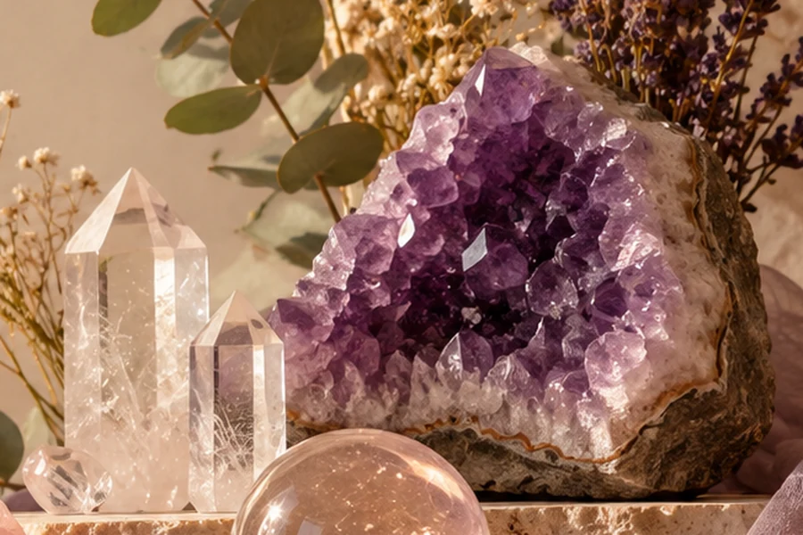
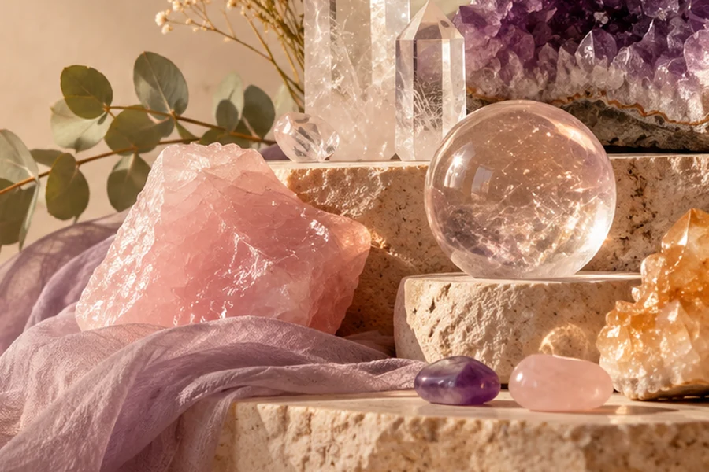
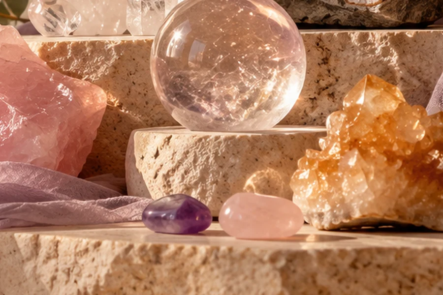
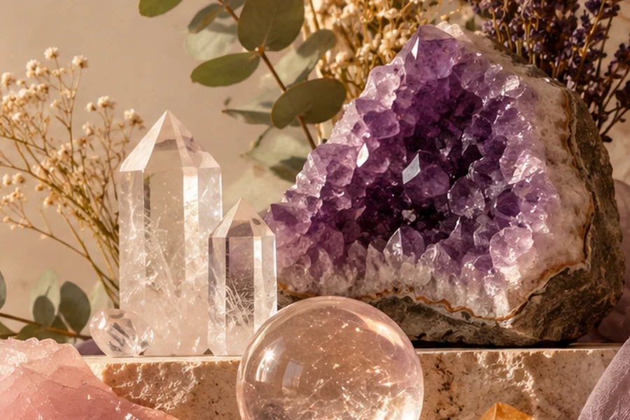

01 · Energia
Cuidado Energético
Para limpar, alinhar e recarregar o campo energético com o apoio de práticas e cristais.
Conhecer serviços →Portal de cura com cristais no coração de Cuiabá.
Aqui, cada cuidado é um caminho de volta para você. Unimos terapias energéticas, massagens, rituais do feminino e a força dos cristais para cultivar leveza, clareza e presença.
Escolha a experiência que mais conversa com o que você precisa neste momento. Cada atendimento começa com escuta e orientação.

Para limpar, alinhar e recarregar o campo energético com o apoio de práticas e cristais.
Conhecer serviços →
Massagens e rituais para soltar tensões, descansar e voltar a habitar o corpo.
Conhecer serviços →
Beleza com intenção: cuidados para pés, mãos, cabelo e couro cabeludo.
Conhecer serviços →
Oráculos, banhos e talismãs para orientar, fortalecer intenções e cuidar da jornada.
Conhecer serviços →Os cristais atravessam a experiência Shantalle como expressão da beleza mineral e como parte de práticas de cuidado e contemplação. Cada atendimento é pensado a partir da pessoa, do momento e do propósito que ela traz.
Mais do que oferecer uma fórmula pronta, a proposta é criar espaço para desacelerar, perceber e escolher o cuidado que faz sentido para você.
“Me senti acolhida e reencontrei a leveza.”Bianca Palhano · empresária